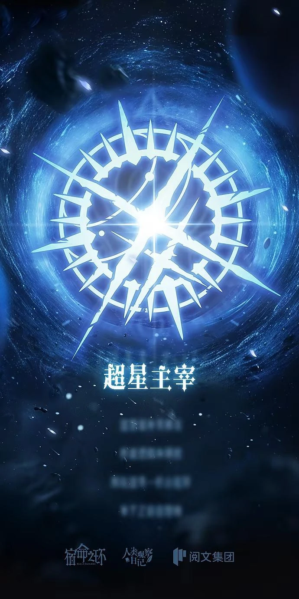

Overview
...Without necessary resistance, the mere approach of Supernova Dominator would tear the planet apart.
Madam Magician, Book 2, chapter 1090
The Supernova Dominator is one of the Outer Deities from the Cosmos that attempted to invade Earth. "He" is the current owner of the Condenser.
Honorific Name
The Ruler of Stars; The Symbolism of Weight and Density; The Controller of Fundamental Forces; The Laws of the Boundless Cosmos (群星的主宰， 沉重和致密的象征， 基本之力的掌控者， 无垠星空的律法)
Symbols, Authorities, & Abilities
"He" possesses full Authority over the Condenser and the corresponding Symbols, which includes but is not limited to the following:
- Condenser: Authorities over Gravity (Space-Time) and Fundamental Forces, and the Symbols of Density, Weight, Gravity and Attraction.
The Symbols, Authorities, and Abilities "He" possesses and displays at the Above the Sequence level include:
- Laws of the Cosmos: "He" controls the Order and Rules of celestial mechanics in the entire universe13
- If "He" were to obtain the Nation of Disorder, "He" would be able to complete the Order and Rules beyond the celestial mechanics.
- Ruler of Stars: "He" can control and summon the Stars in the entire universe.1
- "He" can summon "His" shepherded Stars through the Spirit World, creating Supernovae and catastrophic Black Holes without compromising "His" structural stability.
- If "His" connection with the Spirit World is cut. "He" will be forced to spend extra time converting the Stars into conceptual forms, sending them into the Astral World, and transporting them to "His" location, finally manifesting them in reality.
- "He" can fully control millions of stars as an upper limit.14
- Great Attractor: "He" can control the Great Attractor, gravitationally influencing the motion of galactic filaments and superclusters.2Author's WeChat post error_formulas, part 32
- "He" can dissipate or amplify the gravity of the Great Attractor.2
- Weight and Density: "He" can use the symbols and concepts of Density, Gravity, and Attraction to influence space-time and distort dimensions.3
- The countless exploding suns composing "His" body emit an intense gravitational pull, bending and shattering objects that get too close, capable of tearing planets into fragments.3 4Book 2, chapter 11615Book 2, chapter 116215
- The influence of the gravitational pull that "He" and "His" creations emit is not limited to physical matter, it includes intangible matter such as Fate, thoughts, and Spirit Bodies.16
- The Protected Zones, along with the Chaos Sea that submerged them, were on the brink of collapse under "His" immense gravitational pull but ultimately managed to stabilise before being transported to a planet at the edge of the universe.5
- If "He" were in state unconnected to reality, like having "His" Fate cut by the Final Judgement from the Goddess of Fate, "He" won't be able to utilise this symbolism.6Book 2, chapter 1174
- "His" use of the Spirit World to instantly summon "His" Grazed Stars to create Supernova explosions or terrifying Black Holes stems from "His" symbolism of Weight and Density, reinforcing related physical concepts such as stellar mass density.17
- Welding the Weight and Density symbolism allows "Him" to resist being sealed into a Sequence 1 Abomination Beyonder Characteristic by the Lord of Mysteries.18
- Supernova Dominator's Space-Time attributes can achieve a level of authority that is the same as the Twilight Giant.19
- Controller of Fundamental Forces: "He" controls the Fundamental Forces of reality.
- "He" can eject countless particles from the myriad explosive suns comprising "His" body.7Book 2, chapter 1172
- Fusion: "He" can manipulate particles and cause them to draw closer, triggering repeated nuclear fusions, transforming into various elements, and creating true matter.7
- This can be used to rejoin the River of Fate after having "His" Fate tributary severed by the Goddess of Fate's Final Judgment. This matter will begin forming their own Fates, weaving together and attempting to break through the isolation, seeking to rejoin the vast, illusory mercury - coloured River of Fate.
- "He" can emit light bright enough to devour all darkness, blind an Angel through the Astral Barrier (as well as reveal the barrier to the real world), and make the abstract patterns of the corresponding True Deities be nearly transparent.8
- "He" can turn into a genuine sun and erupt with light that can illuminate the entire Astral World and reveal all hidden entities.20
- As a Great Old Dominator leaning toward Reality, "He" is able to survive strikes from the Eternal Darkness and Calamity of Destruction - powerful existences of Destruction capable of killing other Great Old Dominators in a short time.21
- "His" massive size is much larger than the instant symbolic influence range, making the Death symbolism of the Eternal Darkness need a certain period of time to take its effect on "Him". Essentially, this is Reality resisting and dissipating Mysticism, one of the lower manifestations of the Reality characteristics.22
- As a Great Old Dominator whose consciousness, spirit, Sefirah, Uniqueness, and Beyonder Characteristics were all still intact, and who was not in a state of post-revival dormancy but rather leaned heavily towards reality, "He" could not be completely sealed.6
- After being sealed in the Abomination Beyonder Characteristic by Lord of Mysteries Klein, the Supernova Dominator would naturally break through the seal and emerge from the Characteristic in two or three minutes. Even if Klein reinforced the seal, it would not delay "Him" much longer.6
- Supernova: "He" can create Supernovae in two different ways:
- "He" can directly cause several Supernovae to erupt using "His" star-cluster form.9Book 2, chapter 1168
- This direct method is relatively more dangerous to "Himself", the Supernovae can be manipulated by certain symbolism to backfire against "Him".
- The Lord of Mysteries' symbol of Change can induce an Error in the Supernovae, collapsing violently toward a single point which threatened to create an unimaginably massive Black Hole with Supernova Dominator's star-cluster form, which forced "Him" to stabilise "Himself".
- Amassing multiple Stars in a Star Dominion would immediately result in them attracting and colliding with each other, resulting in an immense eruption of light and heat.1
- "His" Supernovae is enough to obliterate layers of Doors and overwhelm countless Kleins, giving "Him" an unobstructed connection to the Astral World, and even helping the Mother Tree of Desire eliminate several Kleins.1 9
- A supernova explosion from "Him" can immediately destroy a Star System. Afterwards, the impact will continue to spread outward until it dissipates, with the final range of influence reaching the size of a Galaxy.10
- Black Hole: "He" can create massive Black Holes formed from the Supernovae of stars, the colliding matter would rapidly collapse, emitting unimaginable gravitational force that could capture even the expelled light and heat, compressing an entire Star Dominion inward and slowing time dramatically.1
- "His" embryonic Black Hole will develop, tear apart, and devour the planet, causing the barrier to lose support and disintegrate prematurely.11Book 2, chapter 590
- True Deities and Angels could escape, but without the barrier's protection, no one knows what would happen.
- Two King of Angels, Mr. Door and Amon couldn't obliterate the already developing Black Hole. Any attempts to destroy or destabilize the Black Hole as this would only make it stronger.11
- "He" could replenish the Black Hole due to its connection to "Him", preventing it from dissipation.
- The Goddess of Fate was unable to perceive the fates within the Black Hole's region.1
- The possibility of a Black Hole gaining sentience can’t be ruled out.23
- White Hole: "He" can reverse a Black Hole's collapse into the strongest explosion possible - creating a White Hole. This transformation takes at least 1 second to complete.1
- The creation of a White Hole would be accompanied by the eruption of burning light and an extreme explosion, strong enough to obliterate Goddess of Fate, Lord of Mysteries, and severely damage the manifested Sefirah Castle.1
- This is a fundamental symbolism, untouchable and irremovable by abilities such as the Goddess of Fate's Final Judgment.7
Appearance
True Form: "His" body is a star cluster, composed of a myriad explosive suns.1 7 "His" form is large enough that it cannot be contained within a Solar System, "He" only reduced "Himself" to a size small enough to fit inside ours.24 "His" true body is as large as a Star System.10
Personality
"He" wants to embody the symbol of Civilization, so "He" encourages the development of civilisation. However, "He" is still quite mad, so the civilisations under "Him" experience various disasters from time to time.25
Background
According to the Seven Lights, ever since the Oldest One awakened and split apart, the most powerful Outer Deities in the entire universe gathered around this tiny solar system.
Some of "Them" wish to retrieve "Their" Sefirot and characteristics that had been ripped from "Them" and were attracted to Earth. Some of "Them" have the hope of getting neighbouring Sefirot and high-level characteristics which "They" can accommodate.26
Supernova Dominator's goals were harder to pinpoint than the other Outer Deities. Klein speculated that "He" desired the City of Calamity to embody the symbolism of Universal Catastrophe, the Knowledge Moor to enrich "His" star systems and civilisations and the Nation of Disorder to complete the order and rules beyond celestial mechanics.
- Successfully accommodating the Knowledge Moor would make "Him" the symbol of Civilization.27
Furthermore, "He" is likely interested in the Chaos Sea and the Uniquenesses of the Sun and Tyrant Pathways.3Book 2, chapter 1164
The Moon and Darkness Pathways are also considered a component, not the entirety, of the "Mystical Cosmos" required by the Supernova Dominator.28
History
The Supernova Dominator's birth symbolised the birth of stars.29
In the First Epoch, during the Lost Era, the Primordial God Almighty and Celestial Worthy's strong and still-perfect-and-whole power deterred the Outer Deities, who can only settle for observing Earth from afar for now. After the death of the Primordial God Almighty, the Sun, which used to be embodied by the Primordial God Almighty, was now occupied by the Supernova Dominator, up until the end of the Early Era of Fire of the Second Epoch. But due to the Earth's Barrier, "His" light could not shine through, and thus the world was in complete darkness - Which is why the Second Epoch was called the Dark Epoch.30
In the Fourth Epoch, "He" sent a spaceship containing an embryonic black hole inside it to Earth. The plan was for it to rapidly develop, tear apart, and devour the planet, causing the barrier to lose support and disintegrate prematurely. Due to the timely intervention of Mr. Door and Amon, this plan was thwarted. Mr. Door sealed the spaceship, while Amon devised a ritual to regularly siphon power away from the spaceship, ensuring the seal would not weaken. This transformed over the years into the Sea Prayer Ritual of Port Santa.12Book 2, chapter 590
During the Sea Prayer Ritual of 1358, Lumian Lee was almost killed when a heavy, dense, terrifying, and brilliant aura "looked" at him from another place connected to the black hole inside the ship, before being rescued by Madam Magician.12
When Project Vortex commenced, the Supernova Dominator agreed to intervene fully, suppressing the barrier so that all true gods in the Astral World could not interfere with the matters inside the barrier. In exchange, the seal on the spaceship under the waters of Port Santa was to be broken.8Book 2, chapter 865
The Apocalypse
Upon the destruction of the true and fake Astral Barriers, Supernova Dominator was the first Outer Deity outside to affect Earth, "His" body, a terrifying star cluster composed of erupting suns, violently tore the planet into fragments.4 The Protected Zones, along with the Chaos Sea that submerged them, were on the brink of collapse under "His" immense gravitational pull but ultimately managed to stabilize before being transported to a planet at the edge of the universe.5
Supernova Dominator, along with the Mother Tree of Desire and the Goddess of Fate, were held off by Klein, who had just advanced to a true Lord of Mysteries. "His" strength was heavily handicapped by Klein, who severed "His" connection to the Spirit World, which hampered "His" ability to summon suns and stars, forcing "Him" to rely on the Astral World instead. "He" was stalled with the combination of Doors and the symbolism of Change. Later, "He" would be sealed within an Abomination Beyonder Characteristic by Klein and effectively taken out of the fight.
After breaking through "His" seal at the end of The Apocalypse, "He" was immediately affected by the combination of the Lord of Mysteries' Foolishness, and the Visionary's Hypnosis and Virtual Persona through Lumian's access of the Chaos Sea. This made "Him" believe that the Outer Deities intend to harm "Him" and that "He" is a friend of Earth's Great Old Ones - one that would help "Them" when it matters most. Klein and Lumian would later visit "Him" from time to time to maintain "His" Foolish state and Virtual Persona.31
After The Apocalypse, since the Supernova Dominator had become an ally of Earth, there would be more of "His" followers on Earth.32
Translations
| Language | Name |
|---|---|
| Chinese | 超星主宰 |
| Thai | บดีแห่งอติดารา , เจ้าแห่งมหานวดารา |
References
- Book 2, chapter 1171.
- Author's WeChat post error_formulas, part 32.
- Book 2, chapter 1164.
- Book 2, chapter 1161.
- Book 2, chapter 1162.
- Book 2, chapter 1174.
- Book 2, chapter 1172.
- Book 2, chapter 865.
- Book 2, chapter 1168.
- Book 2, chapter 590.
- Book 2, chapter 590.
- Book 2, chapter 1164.
- Author's WeChat post door_abilities, part 5.
- Book 2, chapter 1165.
- Book 2, chapter 589.
- Author's WeChat post fate_formulas, part 26.
- Book 2, chapter 1174.
- Author's WeChat post moon_formulas, part 61.
- Book 2, chapter 1151.
- Book 2, chapter 1177.
- Author's WeChat post giant_formulas, part 25.
- Author's WeChat post paragon_formulas, part 2.
- Author's WeChat post mod, part 13.
- Author's WeChat post ph, part 6.
- Book 1, chapter 1271.
- Author's WeChat post ph, part 29.
- Author's WeChat post darkness_abilities, part 19.
- Author's WeChat post gof, part 21.
- Author's WeChat post history.
- Book 2, chapter 1377.
- Author's WeChat post gof, part 19.
Source
Article adapted from the Supernova Dominator article on the Lord of the Mysteries Fandom wiki (CC BY-SA). Chapter numbers follow that article's citation format.
Image gallery
